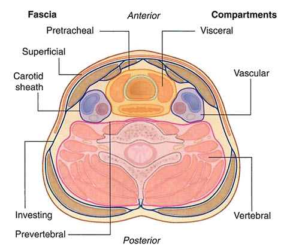

GAS 1 Lab 1: Anterior Triangle of the Neck
OBJECTIVES:GAS1.1.1 Demonstrate the muscles of the neck located in the investing fascia and indicate their major actions, nerve supply and the relationship to the superficial fascia and the other layers of the deep cervical fascia. GAS1.1.2 Demonstrate the endocrine glands in the neck and their relationship to deep fascia, nerves, vessels, and other structures. GAS1.1.3 Trace the flow of blood from the branches of the subclavian and carotid arteries to their target structures in the neck. GAS1.1.4 Trace the lymphatic drainage of the neck to the deep cervical lymph nodes and indicate the drainage of these nodes to major lymph trunks or vasculature of the neck. |
READINGS:Moore (Eighth Edition): Clinically Oriented Anatomy Pages: 990-1020, 1027-1030, 1041-1060. |
Anterior Triangle of the Neck: Module 1 - Page 1 of 4
|  |
| 🔍 Compartments |
| Begin with the posterior neck. |
The visceral fascial compartment
| Add the esophagus. | |
| Add the laryngopharynx. | |
| Add the oropharynx. | |
| Add the cricoid cartilage. | |
| Add the trachea. |
| Add the thyroid gland and parathyroid glands. |